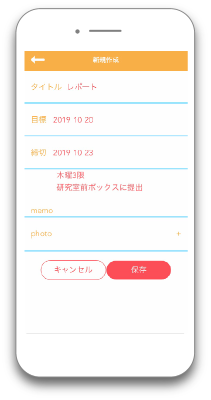

Works
早食いを防止するお箸
Chobit!




健康に気をつけたいのについつ早食いしてしまうという人をターゲットに、箸に装着するだけで１口の間隔を可視化できるプロダクトと連動アプリを制作しました。１口の間隔が早すぎると赤のマーク、適切だと青のマークがアプリに表示されていき、どの時間帯に早食いをしてしまうのかを見ることで、気をつけるべき食べ方の特徴を見つけ出します。IoT機器として、幼稚園や小学校など、大人数の子供がいるところでの食べ方指導に使ったり、食べ方の改善をできた人にサービスを受けられるクーポンを配布するなどして、使ってもらえることを想定しています。
大学の実習でIoTをテーマにグループワークで制作しました。
授業内では、１口の間隔を測るプロダクト部分のプロトタイプをobnizと3Dプリンタを用いて作成、またアプリは測定した値を可視化する部分をプロトタイプとして作成しました。私はアプリのデザイン・コーディングを担当しました。